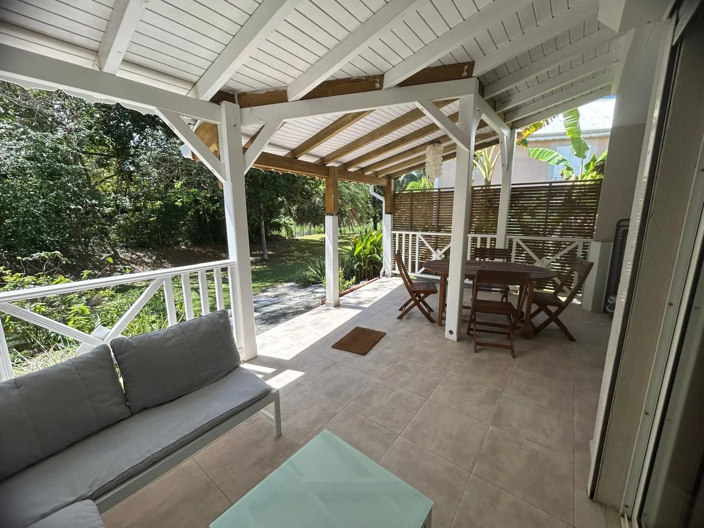
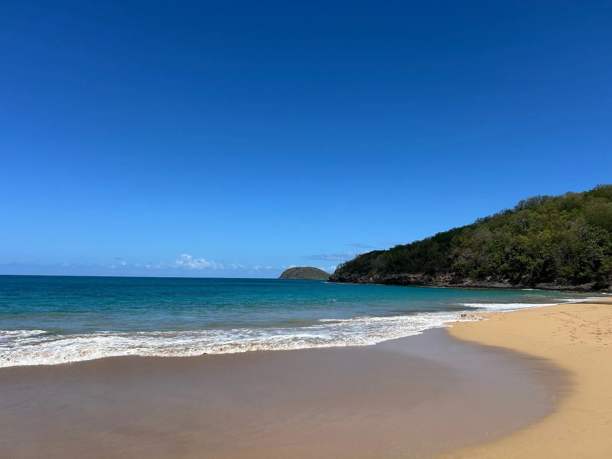
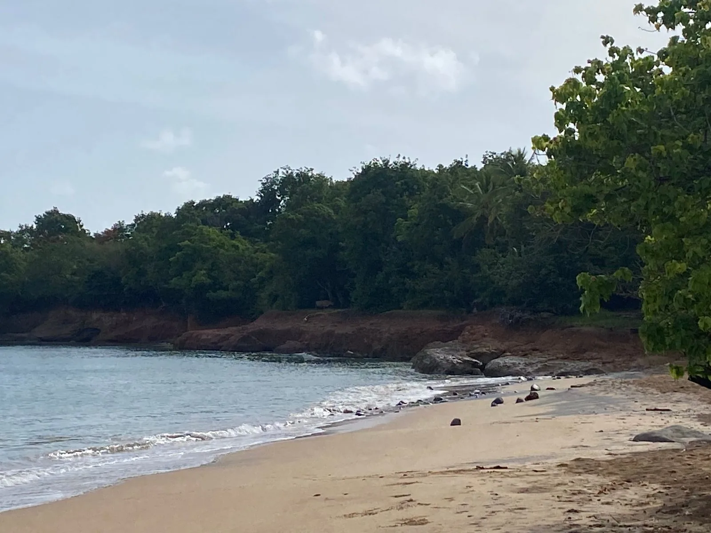
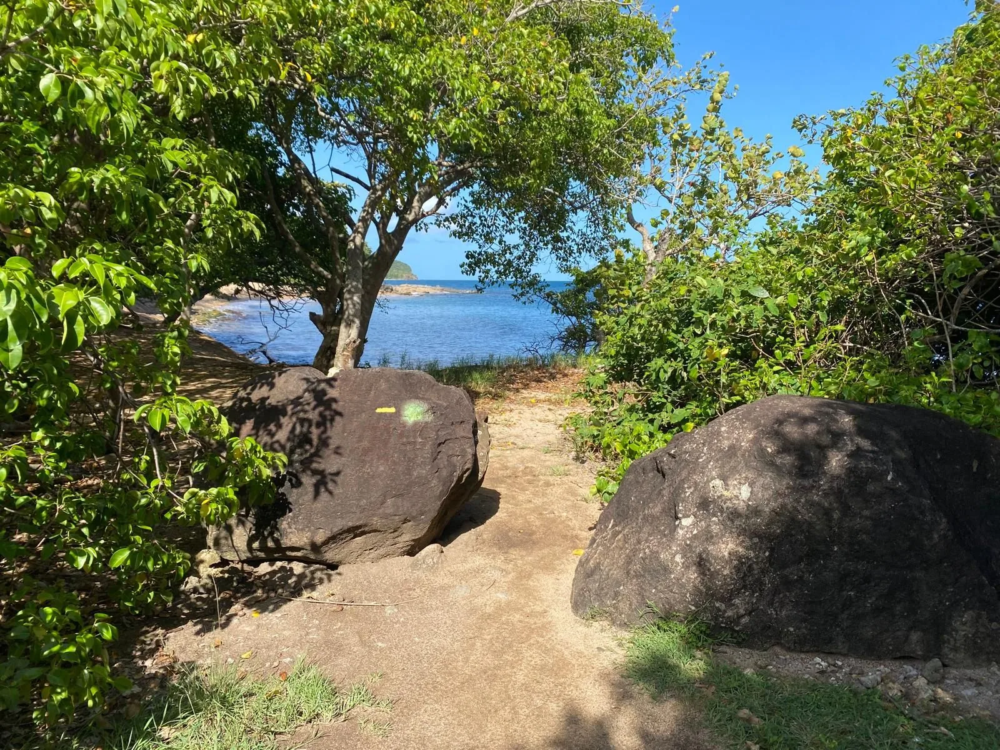

01 / ENTRER · LE SÉJOUR
La terrasse
se prolonge.
Les baies relient le salon à la terrasse. Le brasseur d’air, les murs blancs et les touches de rouge donnent le ton.
Toutes les photos
Sainte-Rose, Guadeloupe · Basse-Terre
Une maison ouverte sur le jardin.
UNE MAISON À SAINTE-ROSE · GUADELOUPE
La visite commence iciLA MAISON
Ti Libélil Blé accueille six voyageurs dans une maison sur deux niveaux. Environ 100 m², terrasses comprises, pour partager les journées et retrouver son espace.
01 / ENTRER · LE SÉJOUR
Les baies relient le salon à la terrasse. Le brasseur d’air, les murs blancs et les touches de rouge donnent le ton.
Toutes les photos
02 / PARTAGER · LA CUISINE
La cuisine ouverte rassemble four, plaques et micro-ondes autour du plan de travail. Lave-vaisselle et réfrigérateur-congélateur complètent l’équipement.
Toutes les photos
03 / MONTER · VERS LES CHAMBRES
L’escalier mène aux trois chambres. En se retournant, on retrouve le séjour, la terrasse et le jardin dans le même regard.
Toutes les photosLES NUITS
Toutes les chambres sont climatisées. Les deux lits queen size mesurent 160 × 200 cm ; les deux lits simples, 90 × 190 cm.

1 lit queen size · 160 × 200 cm
1 lit queen size · 160 × 200 cm

2 lits simples · 90 × 190 cm
Les trois chambres sont à l’étage. La maison se répartit sur deux niveaux.
LES SALLES DE BAIN
Deux salles de bain accompagnent le séjour, dont une attenante à une chambre. Une double vasque et un grand miroir composent l’un de ces espaces.
AU GRAND AIR
Sous le toit de la terrasse, une table en bois et un salon extérieur. Au-delà, la végétation du jardin de la résidence.


La piscine est partagée avec les autres résidents. Elle est bordée de dalles claires et de végétation.
AUTOUR DE LA MAISON
Quitter la maison, retrouver le littoral. Les photographies de ce chapitre montrent les alentours du séjour.


Le sentier côtier de la Pointe Allègre, Clugny, Nogent, Vinty et les Amandiers composent les premières idées de sortie. Vers Deshaies, poursuivez par Grande Anse et La Perle.
Sainte-Rose · Basse-Terre · GuadeloupeLe contexte et la localisation du logement sont précisés sur Airbnb.
Situer le séjour sur AirbnbNOS GUIDES DU COIN
Nos conseils de propriétaires pour profiter du nord de la Basse-Terre : le sentier du littoral, les plages, les sorties et les bonnes tables.





PRÉPARER LE SÉJOUR
Les repères utiles pour organiser votre arrivée. Retrouvez le détail des équipements et des conditions sur Airbnb.
Informations vérifiées le 15 octobre 2026. L’annonce Airbnb ↗
QUESTIONS FRÉQUENTES
Les réponses aux questions que l’on nous pose le plus souvent.
À Sainte-Rose, au nord de la Basse-Terre, en Guadeloupe. La maison est dans une résidence entre le bourg de Sainte-Rose et Deshaies, tout près du littoral de la Pointe Allègre. L’aéroport Pôle Caraïbes est à environ 30 minutes de route.
Jusqu’à 6 voyageurs. Les trois chambres climatisées sont à l’étage : deux chambres avec un lit queen size de 160 × 200 cm et une chambre avec deux lits simples de 90 × 190 cm. La maison compte deux salles de bain, dont une attenante à une chambre.
Non. La piscine est celle de la résidence et elle est partagée avec les autres résidents. On passe par le pédiluve et la douche avant de se baigner, et les enfants restent sous la surveillance d’un adulte.
Oui. La mer est à environ 400 m de la maison. Un petit chemin mène au sentier du littoral de la Pointe Allègre, qui dessert à pied l’Anse des Îles, la plus proche, puis la plage de Clugny d’un côté et la plage des Amandiers de l’autre. Grande Anse et la plage de la Perle, vers Deshaies, se rejoignent en voiture.
C’est recommandé pour explorer l’île librement : cascades, forêt tropicale, Deshaies, Bouillante. Pour une immersion dans l’ambiance locale, des cars réguliers relient la résidence à Pointe-à-Pitre et à Bouillante. La mer et le sentier du littoral se font à pied.
Un petit centre commercial à quelques minutes de la maison réunit un hypermarché, une pharmacie, un primeur et des restaurants. Un marché artisanal s’y tient tous les vendredis de 15 h à 20 h. Le matin, une voiture à pain passe dans la résidence.
Les trois chambres sont climatisées et un brasseur d’air rafraîchit le séjour. Le Wi-Fi et la télévision sont disponibles. La cuisine est équipée d’un four, de plaques, d’un micro-ondes et d’un lave-vaisselle, et un lave-linge est à disposition.
Oui : un lit parapluie et une chaise haute sont disponibles dans la maison. Les chambres sont à l’étage, et les enfants doivent toujours être accompagnés d’un adulte à la piscine.
L’arrivée se fait à partir de 15 h et le départ avant 12 h.
Non. Les animaux ne sont pas admis, les fêtes et soirées ne sont pas autorisées, et la maison est non fumeur. Le calme est demandé de 22 h à 7 h, par respect pour le voisinage.
Les prix, les disponibilités et la réservation se trouvent sur l’annonce Airbnb de Ti Libélil Blé.
Le sentier du littoral de la Pointe Allègre au départ de la maison, la mangrove en bateau depuis le port de Sainte-Rose, les sources de Sofaïa, le jardin botanique de Deshaies, puis plus loin la Réserve Cousteau à Malendure, le bain chaud de Bouillante et les cascades de la Basse-Terre. Nos idées de sorties en Basse-Terre les détaillent.
VOTRE SÉJOUR
Choisissez vos dates sur Airbnb et retrouvez les tarifs, les disponibilités et les conditions de réservation.
Voir les disponibilités sur AirbnbRéservation directement sur Airbnb.